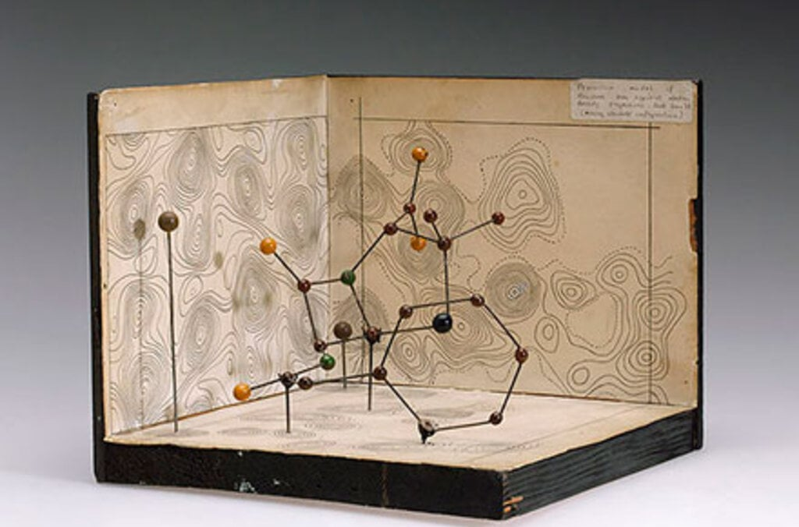
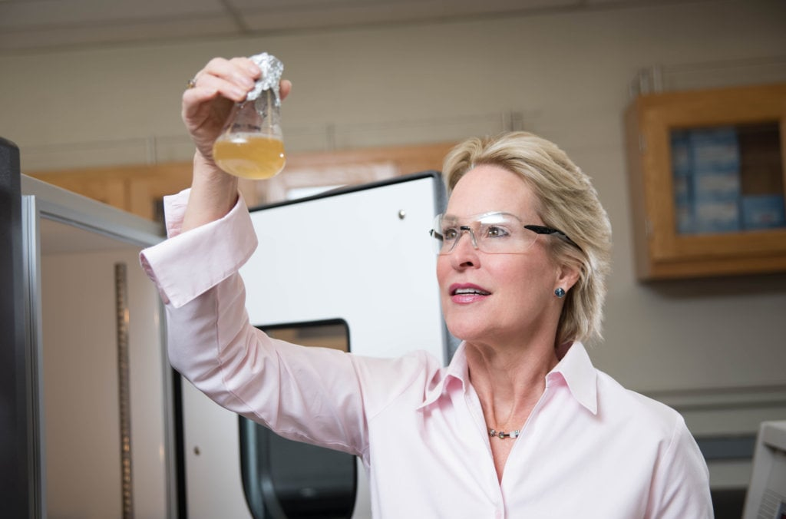

3 advances that changed Chemistry

Nobel Prize in Chemistry 1964
Mapping molecules
Mapping molecules
Dorothy Crowfoot Hodgkin’s work determining the 3D structure of molecules had immediate implications. Her map of the structure of penicillin made the drug easier to manufacture.

Nobel Prize in Chemistry 1961
Carbon dioxide assimilation
Carbon dioxide assimilation
Melvin Calvin showed how plants convert carbon dioxide into carbohydrates and created a clear picture of a complicated sequence of reactions.

Nobel Prize in Chemistry 2018
Enzyme revolution
Enzyme revolution
Frances Arnold conducted the first directed evolution of enzymes. The uses of results include more environmentally friendly manufacturing of chemical substances.